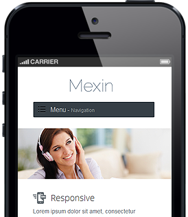
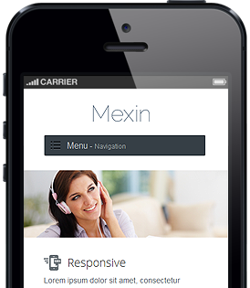

Affordable and non-intrusive care
Home monitoring with a high level of privacy and confort within your home for less than $30 per month. Our sensors are designed to blend with your surroundings to provide intelligent monitoring for your health without any invasive technology such as video surveillance, audio recording, etc.